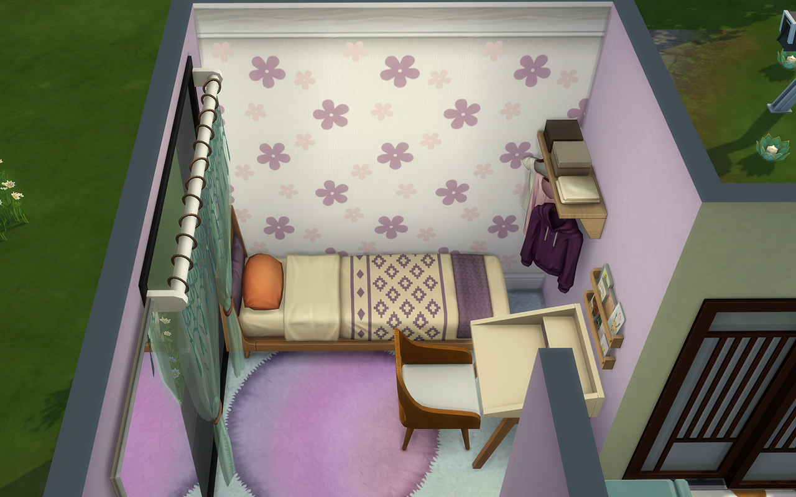
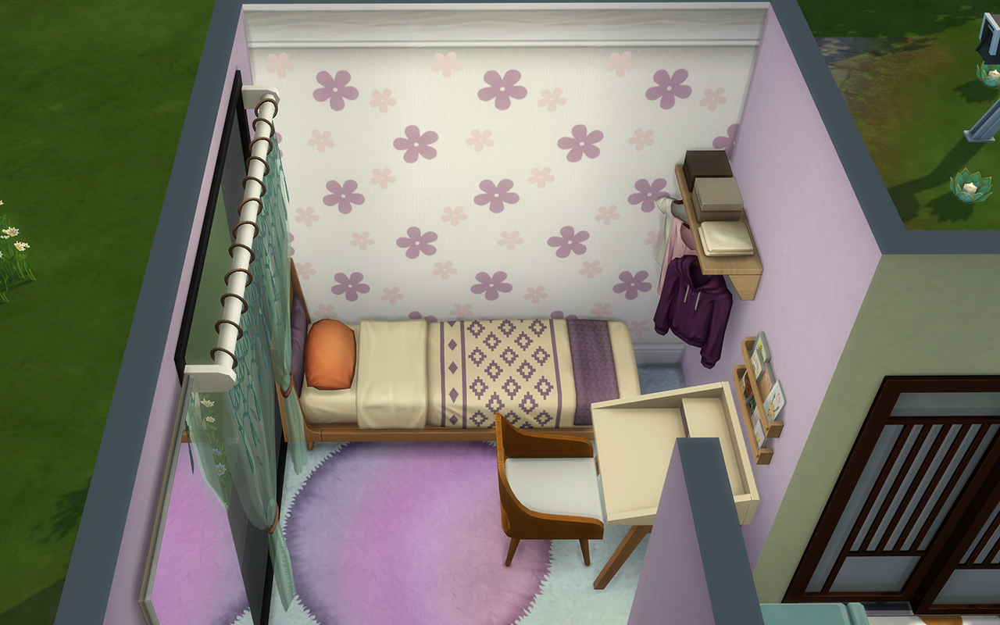
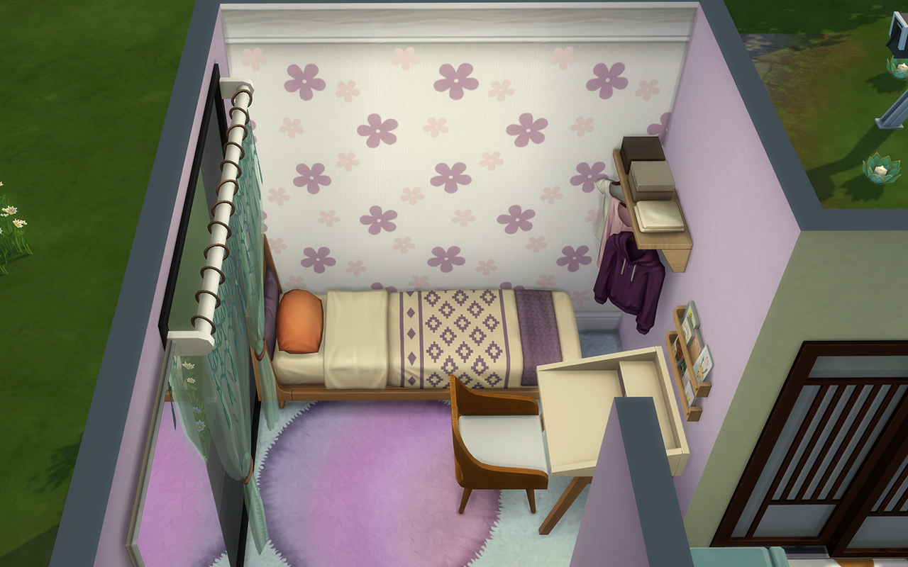

Me apasiona construir y diseñar casas. Y, ya que en la vida real no puedo hacerlo, dado que vivo de alquiler, me he aficionado a los Sims 4, donde puedo crear millones de ideas.
Mis casas
Estas son tres de mis mejores casas, con un poco de variedad. Veremos una tiny house, una casa familiar y una starter house, tanto por fuera como por dentro, aunque se hará más incapié en el diseño de interiores.

Mis unidades domésticas
Las unidades domésticas son los personajes que habitan una casa, que en caso de vivir más de un personaje nos encontramos con una familia. El diseño de personajes no es mi fuerte, porqué disfruto más construyendo que roleando, pero alguna he creado especialmente para mis construcciones.


 
